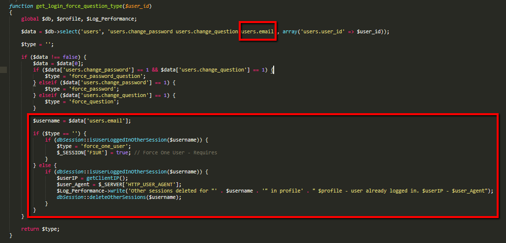

This Template shows user that another browser is using their account
framework/includes/dbSession.php
Property added
private $preventwrite = false;
Functions added
public function prevent_write()
public static function loadSessionExpireTime()
public static function isUserLoggedInOtherSession($email)
public static function deleteOtherSessions($email)
public static function checkUserSkippingOtherSessions($username, $profile, $objLog)
Functions modified
public function read($session_id)
- Only the identation of the '$sRead=$dbm->select...' was changed (line code 74)
public function fixConfig()
- This function is now a STATIC function
From 'public function fixConfig()' to 'public static function fixConfig()'
public function write($session_id, $session_data)
if ($this->preventwrite) return;
$data["system_session_data.email" ] = $dbm->ems($_SESSION['USERNAME']); The value of the "system_session_data.email" field it was added to INSERT and UPDATE
public static function checkSession($session_id)
self::fixConfig();
FROM '$this->fixConfig();' TO 'self::fixConfig();'
framework/includes/functions.user.php
Function modified
function get_login_force_question_type($user_id)
- users.email field was added to check if another browser is logged with the current login
